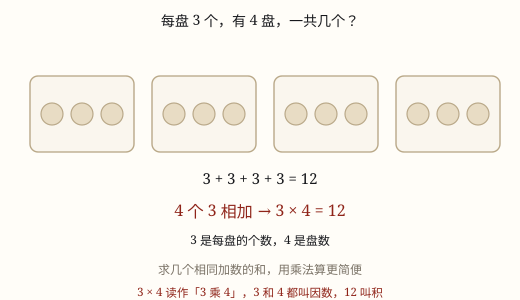

乘法的初步认识（几个几）
加法算式里的加数全都一样时，可以改写成乘法。乘法就是求几个相同加数的和的简便写法，4 个 3 相加写作 4×3。
| 所属主题 | 数的运算 |
|---|---|
| 所属模块 | 数与代数 |
| 课标学段 | 第一学段（1~2年级） |
| 前置知识 | 加法的认识与 5 以内加法 |
| 核心素养 | 符号意识运算能力数感 |
课标要求
| 数与代数·数与运算 | 在具体情境中，了解四则运算的意义，感悟运算之间的关系（例3）。 印刷第 18 页 行为动词：了解 |
|---|---|
| 数与代数·数与运算 | 探索乘法和除法的算理与算法，会简单的整数乘除法。 印刷第 18 页 行为动词：掌握 |
说明
花坛里摆了 4 盘花，每盘 3 盆。一共有多少盆？用加法算：3+3+3+3=12。你看，四个加数一模一样，都是 3。
像这样加数全都相同的加法，可以写得更短：4 × 3 = 12，读作「4 乘 3 等于 12」。中间那个「×」叫乘号，念「乘」。
乘法算式里，乘号两边的数叫因数，算出的结果叫积。4 × 3 = 12 中，4 和 3 是因数，12 是积。
所以说，乘法不是另起一套算法，它就是求几个相同加数的和的简便写法。加数不完全相同（比如 3+3+4），就没有「几个几」可说，不能写成乘法。
使用场景
摆花盆：花坛每排摆 6 盆，摆 5 排，一共几盆？不用把 6 加五遍，5 × 6 一下就出来。
分文具：一盒铅笔 10 支，买 4 盒一共几支，就是 4 个 10。
买东西：一张贴纸 2 元，买 6 张要几元——这是 6 个 2 元。
数座位：教室每排 8 个座位，一共 6 排，全坐满能坐多少人。
吃饭摆筷子：一双筷子 2 根，摆 5 双就是 5 个 2。
注意点
加数必须完全一样。2+2+2 能写成 3 × 2；2+3+4 不能，三个加数不同，只能老实加。
先数清「几个几」再动笔。4 盘、每盘 3 个，是「4 个 3」，写成 4 × 3 或 3 × 4 都行；但如果是 3 盘、每盘 4 个，意思就变了，不能混着说。
积不是加数的个数。4 × 3 = 12，不是 4 也不是 7；12 是 4 个 3 合起来的总数。
乘号写清楚。手写时写成一个小叉「×」，两边留一点空，别写得像「+」，也别写成字母 x。

图 1：4 个 3 相加，写成乘法就是 3×4
为什么是这样
算理推导
先老老实实加：每盘 3 盆，4 盘就是 3+3+3+3。加一次数一次——1 盘 3 盆，2 盘 6 盆，3 盘 9 盆，4 盘 12 盆。
加着加着能看出规律：每多一盘，就多 3。所以「一共多少」只跟两件事有关——每盘几个（3）和有几盘（4）。
既然只跟这两个数有关，就把它们并排写下来，中间放一个记号「×」：4 × 3。这个记号的意思是「按份数累加」，不是凭空发明的新算法。
验一验：4 × 3 = 12，跟 3+3+3+3 的结果一样。盘数越多，乘法越省事——50 盘花，加法要写 50 个 3，乘法只写 50 × 3。
动手实验
抓一把黄豆，5 个一堆地分。分完数一数：分成了几堆、每堆几个。先写加法（比如 5+5+5+5），再写乘法（4 × 5），看两个算式的结果是不是一样。再换成 3 个一堆、2 个一堆各试一次，说说「几个几」里的两个数分别指什么。
按场景的例题
例 1（场景：校园生活） 给校门口的花坛摆花盆
花坛每排摆 6 盆花，一共摆了 5 排。一共摆了多少盆？先用加法算，再写成乘法。
解：6+6+6+6+6=30，是 5 个 6，写成 5 × 6 = 30。
答：一共 30 盆。
例 2（场景：购物消费） 在文具店买贴纸
一张贴纸 2 元，买 6 张一共要多少元？
解：6 个 2 元：2+2+2+2+2+2=12，写成 6 × 2 = 12。
答：一共 12 元。
例 3（场景：饮食与配比） 吃晚饭前摆筷子
家里 5 个人吃饭，每人一双筷子。一共要摆多少根筷子？
解：一双筷子 2 根，5 双就是 5 个 2：5 × 2 = 10。
答：一共 10 根。
例 4（场景：上学日常） 坐公交车上学
公交车上一排有 4 个座位，一共 6 排。全坐满能坐多少人？
解：6 个 4：4+4+4+4+4+4=24，写成 6 × 4 = 24。
答：能坐 24 人。
常用推论
乘法算式中：因数 × 因数 = 积；反过来，积 ÷ 一个因数 = 另一个因数。
交换两个因数的位置，积不变：4 × 3 = 3 × 4。所以「4 个 3」和「3 个 4」说法不同，结果相同。
只有加数完全相同的加法才能改写成乘法；加数不同，就只能一步一步加。
乘法算式和加法算式可以互相翻译：a × b 就是 b 个 a 相加，也是 a 个 b 相加。
易错点
错把 3+3+4 写成 3 × 3。
为什么错乘法的前提是每个加数都一样。3+3+4 里有 3、3、4 三个不同的加数，凑不出「几个几」。
正确3+3+4=10，只能用加法算。如果是 3+3+3（3 个 3），才可以写 3 × 3 = 9。
错「4 盘，每盘 3 个」写成 4+4+4。
为什么错把「几盘」和「每盘几个」弄反了。4+4+4 表示 3 盘、每盘 4 个，跟题意不是一回事。
正确4 盘、每盘 3 个是「4 个 3」，写成 3+3+3+3 或 4 × 3 = 12。
错算 5 × 2 时，答成 5，或者答成 7。
为什么错答 5 是把因数当成了积；答 7 是把乘号当成了加号。5 × 2 是 5 个 2 相加。
正确2+2+2+2+2=10，所以 5 × 2 = 10。
直观理解
乘法像「整箱装」的饮料。一箱 6 罐，你要 4 箱，不用一罐一罐数到 24——看箱子上写着「6 罐」，数 4 个箱子就够了。加数是「一箱几罐」，乘数是「几箱」，积是「一共几罐」。要是有一箱只装了 4 罐，这个「整箱装」就不成立了，只能一罐一罐数——这正是加数不一样就不能写乘法的原因。
相同加数才相乘，几个几要看分明；几盘、每盘几个，两数一乘就搞定。